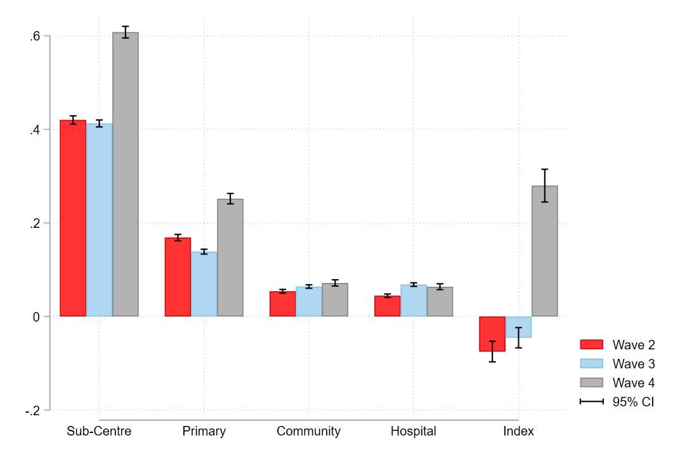
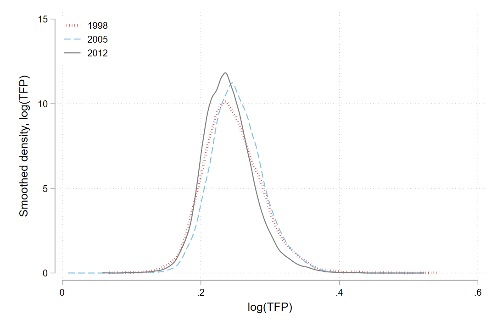
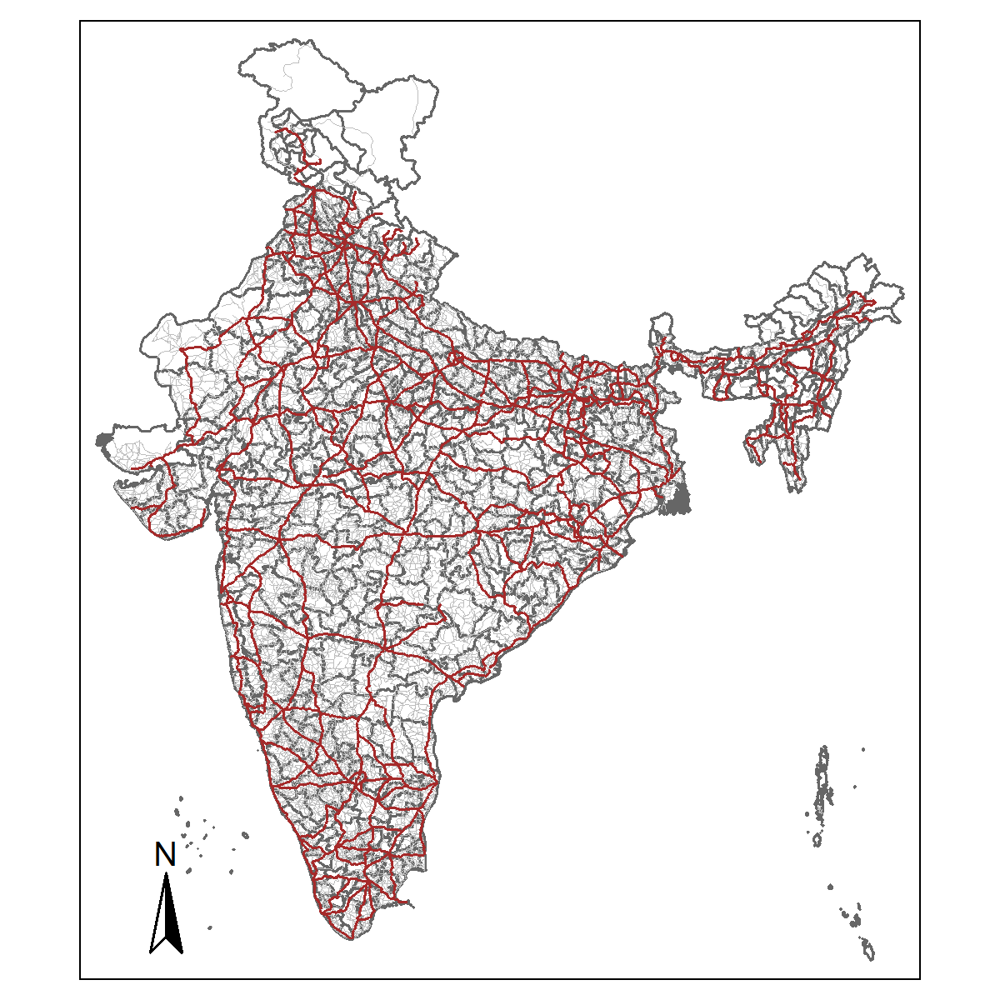
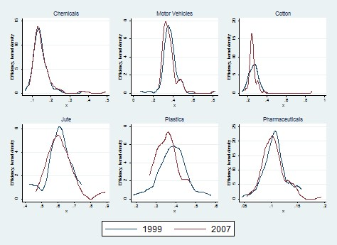
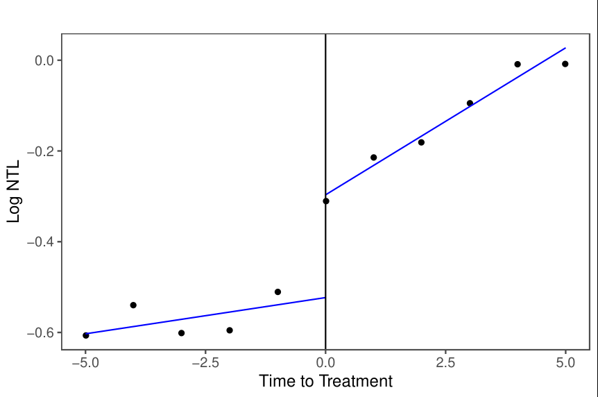
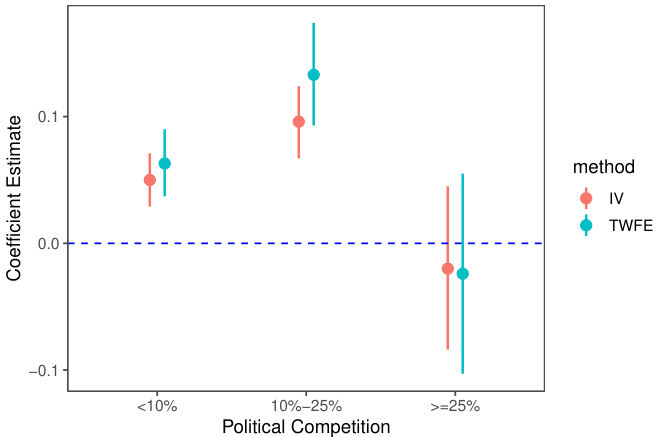
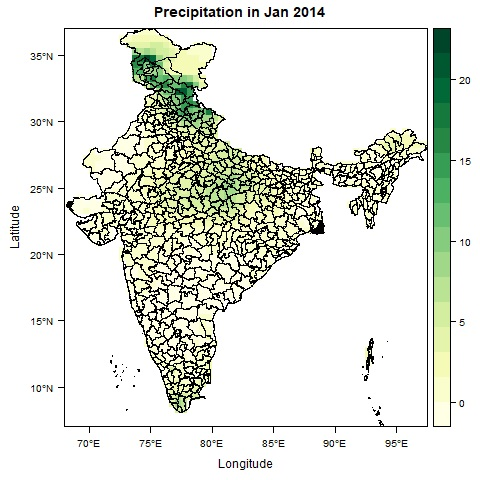
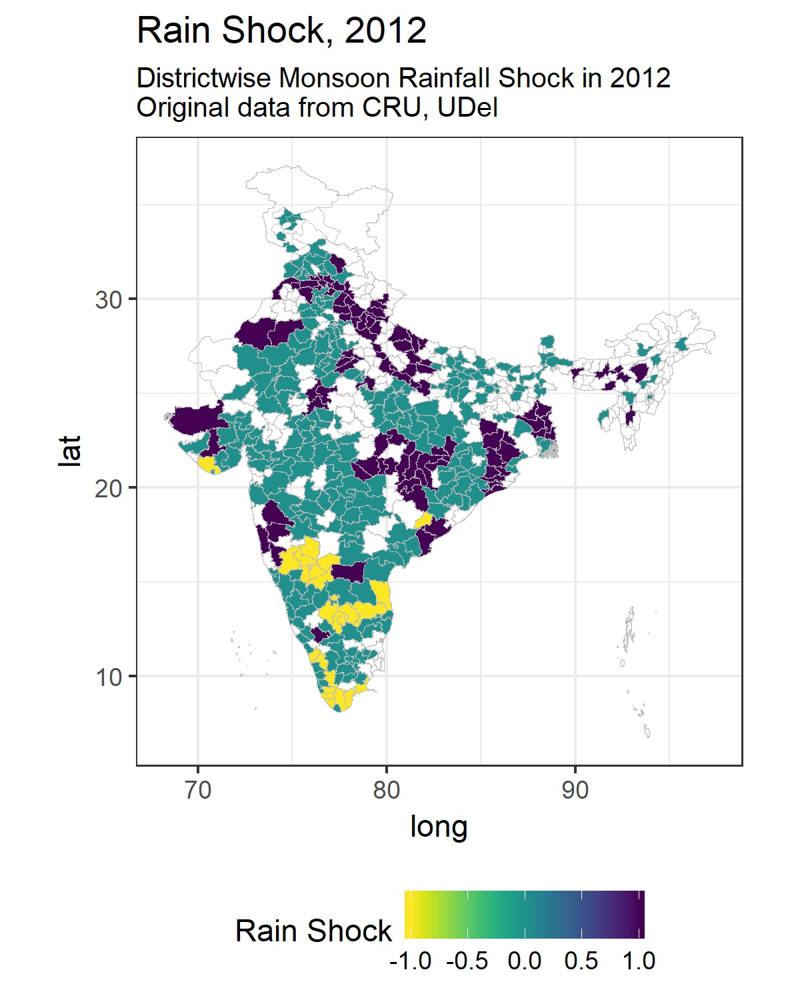

▪ Political Competition and Public Healthcare: Evidence from India, World Development (with Kambhampati U.)

Abstract
In this paper, we examine the causal effect of political competition on public provision of healthcare. Specifically, we investigate whether the effect of political competition on more visible public goods (e.g. health centre access) differs from its impact on less visible public goods (e.g. health centre capacity such as doctors, medical supplies, etc.). Using granular data from three recent waves of the Indian District Level Household Survey (DLHS) during 2002-2013 and an instrumental variable approach, we find that incumbents respond to electoral competition, measured as the effective number of parties (ENP), by trading-off less visible health centre capacity for more visible access to health centres. We provide suggestive evidence that focusing on more visible health centres boosts the incumbent party's re-election prospects providing a clear motive for incumbent's action. In addition, we examine the effect of election-year cycles and the role of political alignment in healthcare provision and find compelling evidence of a political economic mechanism at work. By contrast, political competition has no measurable impact on key health outcomes. We conduct several robustness checks to ensure that our estimates are reliable. Thus, our results suggest that electoral competition must be accompanied by strong checks on accountability to improve health outcomes.
▪ Road to Productivity: Effects of Roads on Total Factor Productivity in Indian Manufacturing, Journal of Comparative Economics (with Kambhampati U.)


Abstract
A denser road network lowers transport costs and stimulates manufacturing total factor productivity (TFP). The placement of roads, however, is likely to be non-random. For identification, we exploit cross-state variation in the strength of centre-state partisan alignment that asymmetrically affects road building in aligned states. Using panel data on manufacturing establishments in India from 1998 to 2012, we find that, a 1% increase in road density raises value-added TFP by about 0.25%, on average. A closer examination reveals that the effect varies by plant characteristics and road type. Younger establishments are more likely to gain from a denser road network with highways playing a prominent role. The results are robust to imperfections in the instrument and to other sensitivity checks.
▪ "Infrastructural Development and Firm Efficiency in India (1999-2007), Review of Development and Change, Volume XX, Number 2 (with Hui, N, Kambhampati U.)

Abstract
We examine the impact of macroeconomic conditions on firm-level efficiency and output in Indian manufacturing. Using firm-level data during 1999-2007, we estimate stochastic frontier production functions for six different industries. We find that: first, although the frontier output shifts outwards, the efficiency levels remain largely stagnant. Secondly, we find no positive impact of infrastructural improvements on firm efficiency. The results are robust to using a synthetic index of macroeconomic variables. Specifically, we find that while infrastructural improvements relating to power generation capacity, electrification of railways, bank expansion or road construction are associated with a rise in a firm's production potential or its frontier output, it is associated with a decline in actual firm-level efficiency. The underlying reason for this puzzle might be a shifting out of the production frontiers over time at a pace faster than the rate of increase in output, which is consistent with uneven utilisation of improvements in infrastructure amongst firms
Ongoing Work
▪ None-of-the-Above Voting and Policy Responsiveness: Theory and Evidence from India (with Minh, Tung Le)


Abstract
This paper examines how introducing a None-of-the-Above (NOTA) vote affects the responsiveness of policy-making. We develop a career concerns model in which strategic and engaged voters share common priors about candidate competence but differ in their expressive utility from voting. The model shows that, NOTA induces a trade-off between the twin electoral functions of selection and disciplining. On the one hand, NOTA improves electoral selection in equilibrium by allowing strategic voters to delegate their decision to engaged voters when they receive a noisy signal of incumbent's performance. The incumbent knows this which then promotes further public investments. On the other hand, NOTA votes limit electoral accountability. We show that the overall gain from NOTA depends critically on the quality of voter information and the level of political competition. To test these predictions, we exploit the introduction of NOTA in Indian elections following a Supreme Court mandate. Using assembly constituency-level panel data between 2012 to 2021 and an instrumental variable strategy, we find that NOTA adoption increased log nighttime luminosity, a proxy for local economic activity, by 7.5%-10%. We examine heterogeneity in its impact and find that, consistent with our model, the effect is more pronounced in moderately competitive constituencies and in places with low information quality at the margin. These results demonstrate the instrumental role of expressive voting in improving policy responsiveness and highlight the conditions that foreshadow its efficacy.
▪ Vulnerability of Households to Weather Shocks and the Mitigating Role of Workfare Programs


Abstract
Weather shocks pose significant income risks. Using a large household panel survey in India and geo-coded climate data, I find that rainfall shocks reduce income by 7%. It shrinks consumption and assets while increasing household-debt. Rainfall shocks exhibit significant heterogeneity. It predominantly affects the asset-poor and the rural households who typically rely on agriculture or non-agricultural wage incomes. Its impact also varies geographically. I then examine if the roll-out of a major public workfare program improved earnings of its participants in districts that were exposed to rainfall shocks. Using a difference-in-difference strategy and the phased roll-out of the program, I find that it primarily benefits female-headed households. Thus, intensifying workfare programs could increase climate resilience for the most vulnerable population.
▪ Productivity Disrupted: Evidence from a Policy Experiment in India
▪ Misallocation, Price Control and Weather Shocks in Vietnam (with Minh, Tung Le)
▪ Climate Co-benefits of Workfare Programs
Teaching
University of Warwick (2025-26)
- • Statistical Techniques A ug module-leader
- • Econometrics A (Time-Series) msc lecturer
- • Econometrics A (Causal Inference) msc tutor
- • Supervise quantitative focused UG and MSc dissertations 2019-present
University of Warwick (previous years)
- • Econometrics at Warwick Business School (Time-Series) msc lecturer 2021-23
- • Development Economics (Macroeconomics) ug tutor 2019-21
- • Principles of Macroeconomics ug tutor 2020
University of Reading (2015-18)
- • Microfinance msc module-leader
- • Microeconomics for Developing Countries msc module-leader
- • Macroeconomics for Developing Countries msc module-leader
Contact
The best way to reach me is via my university email. I am happy to discuss research, supervision, and collaboration opportunities.